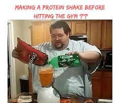

Protein Shake

World's Best Protein Shake
The first thing a good protein shake is a good milk source. Animal milk tends to be a better option, but to each their own.
Next we need a good whey protein source. The cheaper the better, it builds character. Finally you will need eggs. You
can source these from chickens but what you really want is to source them from an ostrich. If you are unable to obtain an ostrich egg
then standard eggs from the chicken species should suffice.
Ingredientes
To summarize the World's Best Protein Shake you will need the following ingredients:
- 1 gallon of animal milk
- 3/8 of the cheapest protein tub you can find
- 12+ raw eggs from whichever animal you can get your grimy hands on
- 9/10 of a scoop of Don't Give a FuckteinTM, because 1 scoop would be too much for your sorry ass
Steppity Steps
The steps to create this thing we have the audacity to call a shake is as follows:
- Put all the ingredients in the biggest dog bowl you can get at your local failing pet shop.
- You mix it you dumbfuck what else would you do
- If you thought there was another step to this recipe then by the Constitution of the UnUnited States of Muricka you
must add a whole raw chicken into the disastrous concoction you just made (preferably the same chicken that you sourced the
eggs from, and I say chicken because we both know you aren't MAN enough for a standoff with an Ostrich you
little chicken twat)
Congratulations, you have just made the World's Best Protein Shake and all it cost you was all the dignity that you never had in
the first place.